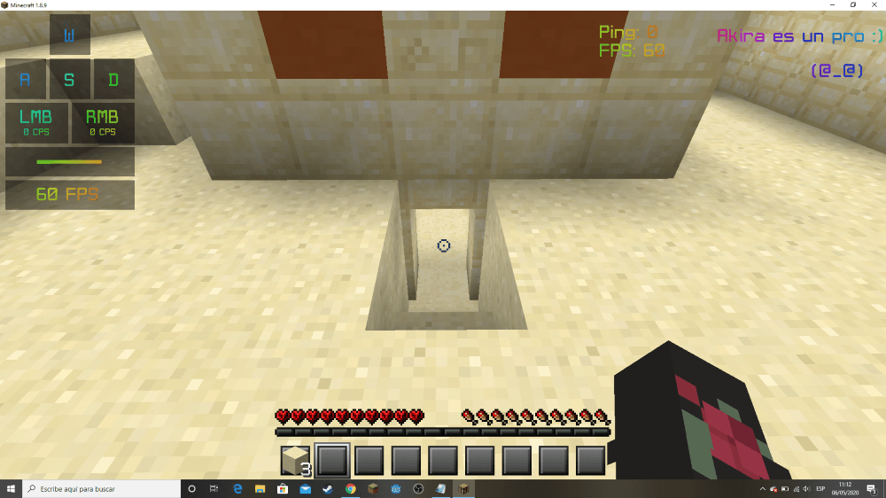

Minecraft Peaceful Speedrun Guide
Basics
Let’s start. On this speedrun, I use minecraft 1.8.9, as the seed can be different in other versions.
The seed is: 2004103968544575047
Note: This seed is a good one for this category, but it can be pretty stressful.
The Temple
When you start, make sure you don’t move, and change the difficulty to peaceful.
Then, make your way to the temple (turn to your right)
Inside The Temple
Once you are on the temple, you want to make a saircase.
Then, you want to break that block (careful!!)
Inside The Temple (2)
Next, being really careful, break the block that is under the pressure plate.
Then, grab all the tnt and use one block or sand to get out of the hole.
Grab all the iron and gold!!
With the remaining blocks, pillar up the hole you made earlier.
Inside The Temple (Photos)


The Village
This is the stressful part (sometimes)
Once out of the temple, go left, and you will see a village.
From here I don’t know how to explain it, so I’ll try my best. Here is an example, as it’s better to see someone do it.
Village Explanation
Basically, what he does it collect the carrots and potatoes, while finding the cleric and the farmer.
Then, he goes to the farmer, and gives him the food in an order, this will give you 8 emeralds.
Then, he goes to the cleric, and gives him the things in order. Note!! it’s really important you do it perfectly (breaking some wood to reset him, taking the redstone, although you are not going to use it, and more).
The End
Once you get the pickaxe and shovel, make your way to the stronghold, and grab some grass on the way there. Then, get to this exact place and dig straight down.
Then, go to the end, and pillar up on the top right corner, then, pillar up the towers and kill the dragon!